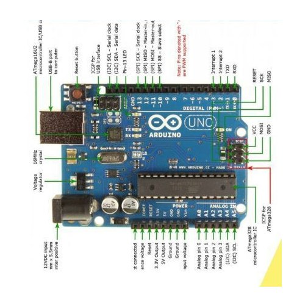
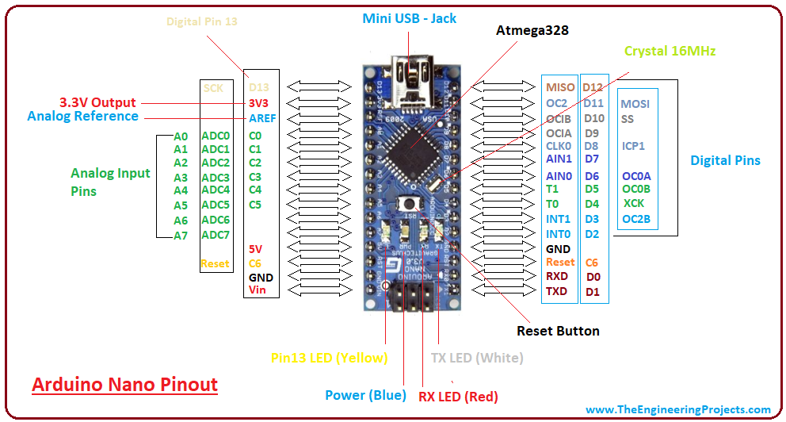
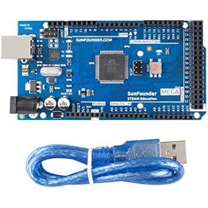
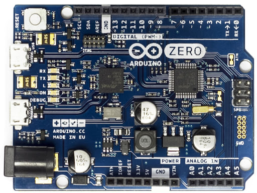
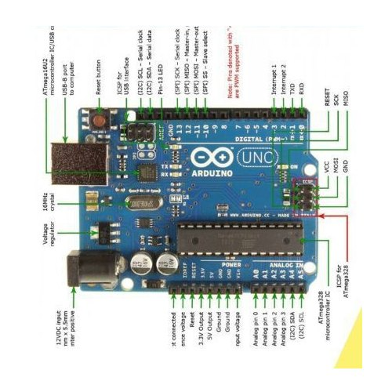
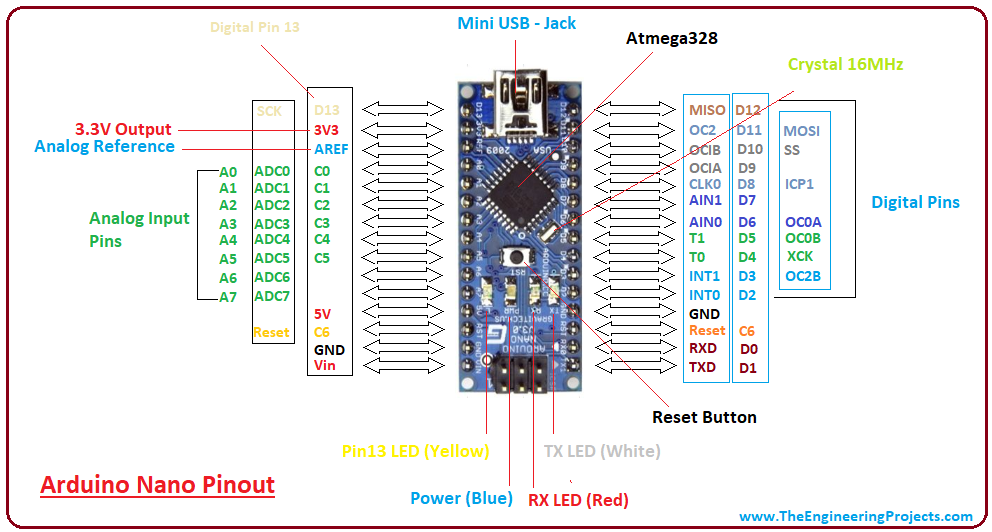
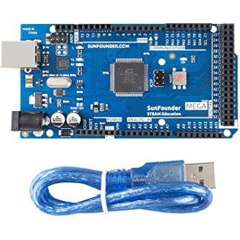
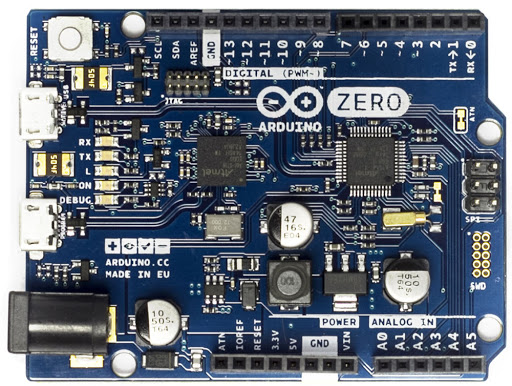

what is arduino?
Arduino is an open-source electronics platform based on easy-to-use hardware and software. Arduino boards are able to read inputs - light on a sensor, a finger on a button, or a Twitter message - and turn it into an output - activating a motor, turning on an LED, publishing something online. You can tell your board what to do by sending a set of instructions to the microcontroller on the board. To do so you use the Arduino programming language (based on Wiring), and the Arduino Software (IDE), based on Processing.
Why Arduino?
Thanks to its simple and accessible user experience, Arduino has been used in thousands of different projects and applications.
The Arduino software is easy-to-use for beginners, yet flexible enough for advanced users.
It runs on Mac, Windows, and Linux. Teachers and students use it to build low cost scientific instruments,
to prove chemistry and physics principles, or to get started with programming and robotics.
Designers and architects build interactive prototypes, musicians and artists use it for installations and to experiment with new musical instruments.
Makers, of course, use it to build many of the projects exhibited at the Maker Faire, for example.
Arduino is a key tool to learn new things.
Anyone - children, hobbyists, artists, programmers - can start tinkering just following the step by step instructions of a kit,
or sharing ideas online with other members of the Arduino community.
There are many other microcontrollers and microcontroller platforms available for physical computing. Parallax Basic Stamp, Netmedia's BX-24,
Phidgets, MIT's Handyboard, and many others offer similar functionality.
All of these tools take the messy details of microcontroller programming and wrap it up in an easy-to-use package.
Arduino also simplifies the process of working with microcontrollers, but it offers some advantage for teachers, students, and interested amateurs over other systems:
-
whatshot
Inexpensive - Arduino boards are relatively inexpensive compared to other microcontroller platforms.
The least expensive version of the Arduino module can be assembled by hand, and even the pre-assembled Arduino modules cost less than $50
-
whatshot
Cross-platform - The Arduino Software (IDE) runs on Windows, Macintosh OSX, and Linux operating systems.
Most microcontroller systems are limited to Windows.
-
whatshot
Simple, clear programming environment - The Arduino Software (IDE) is easy-to-use for beginners, yet flexible enough for advanced users to take advantage of as well.
For teachers, it's conveniently based on the Processing programming environment, so students learning to program in that environment will be familiar with how the Arduino IDE works.
-
whatshot
Open source and extensible software - The Arduino software is published as open source tools, available for extension by experienced programmers.
The language can be expanded through C++ libraries, and people wanting to understand the technical details can make the leap from Arduino to the AVR C programming language on which it's based.
Similarly, you can add AVR-C code directly into your Arduino programs if you want to.
-
whatshot
Open source and extensible hardware - The plans of the Arduino boards are published under a Creative Commons license,
so experienced circuit designers can make their own version of the module, extending it and improving it.
Even relatively inexperienced users can build the breadboard version of the module in order to understand how it works and save money.
Different types of IC boards
- Entry Level
Get started with Arduino using Entry Level products:
easy to use and ready to power your first creative projects. These boards and modules are the best to start learning and
tinkering with electronics and coding. The StarterKit includes a book with 15 tutorials that will walk you through the basics up to
complex projects.
-
ARDUINO UNO

Arduino Uno is a microcontroller board based on the ATmega328P (datasheet). It has 14 digital input/output pins (of which 6 can be used as PWM outputs), 6 analog inputs, a 16 MHz ceramic resonator (CSTCE16M0V53-R0),
a USB connection, a power jack, an ICSP header and a reset button. It contains everything needed to support the microcontroller; simply connect it to a computer with a USB cable or power it with a AC-to-DC adapter or battery to get started.
You can tinker with your Uno without worrying too much about doing something wrong, worst case scenario you can replace the chip for a few dollars and start over again. "Uno" means one in Italian and was chosen to mark the release of Arduino Software (IDE) 1.0.
The Uno board and version 1.0 of Arduino Software (IDE) were the reference versions of Arduino, now evolved to newer releases. The Uno board is the first in a series of USB Arduino boards, and the reference model for the Arduino platform;
for an extensive list of current, past or outdated boards see the Arduino index of boards
shopping_bag BUY ARDUINO UNO
-
ARDUINO NANO

The Arduino Nano is a small, complete, and breadboard-friendly board based on the ATmega328 (Arduino Nano 3.x). It has more or less the same functionality of the Arduino Duemilanove, but in a different package.
It lacks only a DC power jack, and works with a Mini-B USB cable instead of a standard one
shopping_bag BUY ARDUINO UNO
- Enhanced Features
Experience the excitement of more complex projects choosing one of the boards with advanced functionalities, or faster performances.
-
ARDUINO MEGA 2560

The Arduino Mega 2560 is a microcontroller board based on the ATmega2560. It has 54 digital input/output pins (of which 15 can be used as PWM outputs),
16 analog inputs, 4 UARTs (hardware serial ports), a 16 MHz crystal oscillator, a USB connection, a power jack, an ICSP header, and a reset button. It contains everything needed to support the microcontroller;
simply connect it to a computer with a USB cable or power it with a AC-to-DC adapter or battery to get started. The Mega 2560 board is compatible with most shields designed for the Uno and the former boards Duemilanove or Diecimila.
The Mega 2560 is an update to the Arduino Mega, which it replaces.
shopping_bag BUY ARDUINO MEGA 2560
-
ARDUINO ZERO

The Zero is a simple and powerful 32-bit extension of the platform established by the UNO. The Zero board expands the family by providing increased performance, enabling a variety of project opportunities for devices,
and acts as a great educational tool for learning about 32-bit application development. The Zero applications span from smart IoT devices, wearable technology, high-tech automation, to crazy robotics.
The board is powered by Atmel’s SAMD21 MCU, which features a 32-bit ARM Cortex® M0+ core. One of its most important features is Atmel’s Embedded Debugger (EDBG), which provides a full debug interface without the need for additional hardware,
significantly increasing the ease-of-use for software debugging. EDBG also supports a virtual COM port that can be used for device and bootloader programming.
Warning: Unlike most Arduino & Genuino boards, the Zero runs at 3.3V. The maximum voltage that the I/O pins can tolerate is 3.3V. Applying voltages higher than 3.3V to any I/O pin could damage the board.
The board contains everything needed to support the microcontroller; simply connect it to a computer with a micro-USB cable or power it with a AC-to-DC adapter or battery to get started. The Zero is compatible with all the shields that work at 3.3V and are compliant with the 1.0 Arduino pinout.
shopping_bag BUY ARDUINO ZERO
- for more boards click here
Get started with Arduino using Entry Level products: easy to use and ready to power your first creative projects. These boards and modules are the best to start learning and tinkering with electronics and coding. The StarterKit includes a book with 15 tutorials that will walk you through the basics up to complex projects.
-
ARDUINO UNO

Arduino Uno is a microcontroller board based on the ATmega328P (datasheet). It has 14 digital input/output pins (of which 6 can be used as PWM outputs), 6 analog inputs, a 16 MHz ceramic resonator (CSTCE16M0V53-R0), a USB connection, a power jack, an ICSP header and a reset button. It contains everything needed to support the microcontroller; simply connect it to a computer with a USB cable or power it with a AC-to-DC adapter or battery to get started. You can tinker with your Uno without worrying too much about doing something wrong, worst case scenario you can replace the chip for a few dollars and start over again. "Uno" means one in Italian and was chosen to mark the release of Arduino Software (IDE) 1.0. The Uno board and version 1.0 of Arduino Software (IDE) were the reference versions of Arduino, now evolved to newer releases. The Uno board is the first in a series of USB Arduino boards, and the reference model for the Arduino platform; for an extensive list of current, past or outdated boards see the Arduino index of boards
shopping_bag BUY ARDUINO UNO
-
ARDUINO NANO

The Arduino Nano is a small, complete, and breadboard-friendly board based on the ATmega328 (Arduino Nano 3.x). It has more or less the same functionality of the Arduino Duemilanove, but in a different package. It lacks only a DC power jack, and works with a Mini-B USB cable instead of a standard one
shopping_bag BUY ARDUINO UNO
Experience the excitement of more complex projects choosing one of the boards with advanced functionalities, or faster performances.
-
ARDUINO MEGA 2560

The Arduino Mega 2560 is a microcontroller board based on the ATmega2560. It has 54 digital input/output pins (of which 15 can be used as PWM outputs), 16 analog inputs, 4 UARTs (hardware serial ports), a 16 MHz crystal oscillator, a USB connection, a power jack, an ICSP header, and a reset button. It contains everything needed to support the microcontroller; simply connect it to a computer with a USB cable or power it with a AC-to-DC adapter or battery to get started. The Mega 2560 board is compatible with most shields designed for the Uno and the former boards Duemilanove or Diecimila.
The Mega 2560 is an update to the Arduino Mega, which it replaces.
shopping_bag BUY ARDUINO MEGA 2560
-
ARDUINO ZERO

The Zero is a simple and powerful 32-bit extension of the platform established by the UNO. The Zero board expands the family by providing increased performance, enabling a variety of project opportunities for devices, and acts as a great educational tool for learning about 32-bit application development. The Zero applications span from smart IoT devices, wearable technology, high-tech automation, to crazy robotics. The board is powered by Atmel’s SAMD21 MCU, which features a 32-bit ARM Cortex® M0+ core. One of its most important features is Atmel’s Embedded Debugger (EDBG), which provides a full debug interface without the need for additional hardware, significantly increasing the ease-of-use for software debugging. EDBG also supports a virtual COM port that can be used for device and bootloader programming.Warning: Unlike most Arduino & Genuino boards, the Zero runs at 3.3V. The maximum voltage that the I/O pins can tolerate is 3.3V. Applying voltages higher than 3.3V to any I/O pin could damage the board.
The board contains everything needed to support the microcontroller; simply connect it to a computer with a micro-USB cable or power it with a AC-to-DC adapter or battery to get started. The Zero is compatible with all the shields that work at 3.3V and are compliant with the 1.0 Arduino pinout.shopping_bag BUY ARDUINO ZERO